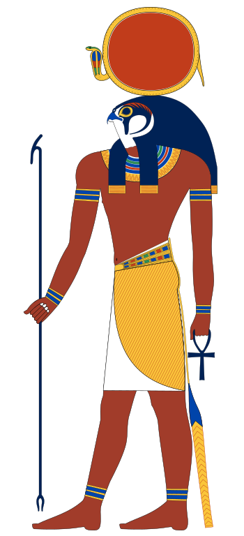
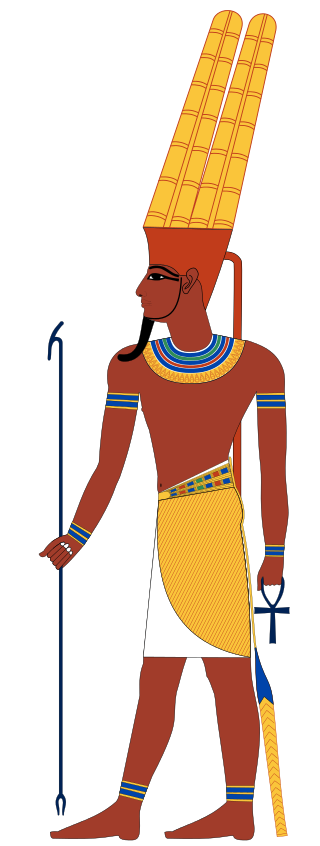
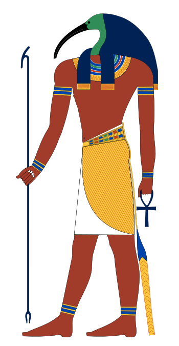
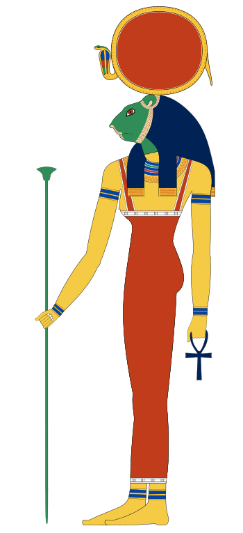
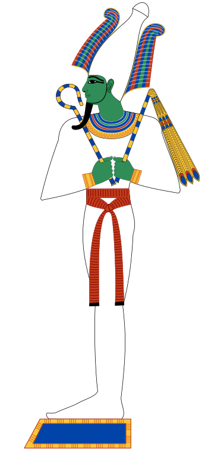
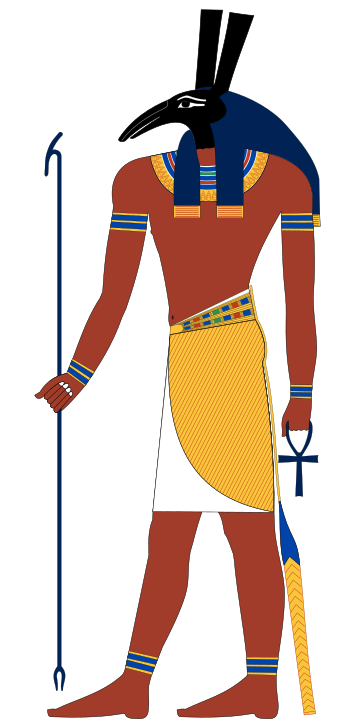
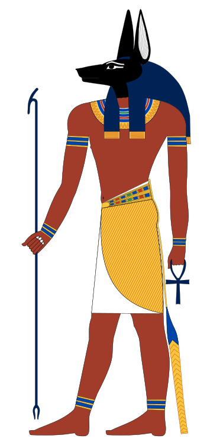
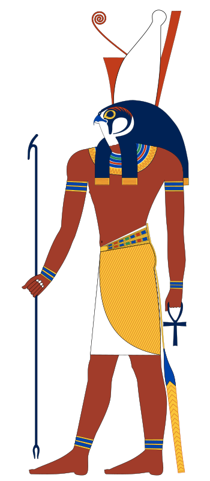
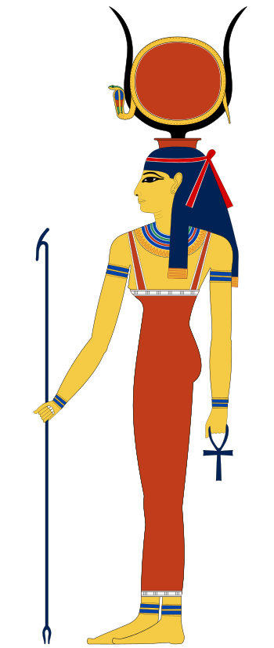
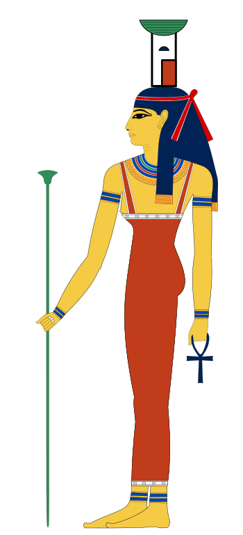

Mitologia Egípcia
Nesta página será tratado sobre a Mitologia Egípcia,
Origem
A origem da mitologia egípcia, segundo Toth, é que tudo surgiu com um vazio
imenso,
profundo, e com forma e cheio de água.
Nessa água primordial, habitavam os espíritos primitivos femininos e masculinos,
os
Demiurgos. Esses espíritos tinham a capacidade de se juntar e criar formas
físicas.
Nesse vazio existia também o ser da plenitude, um Deus além do tempo e espaço,
chamado Atom. Esse ser com o intuito de dar sentido a esse vazio, reuniu os
8(oito)
grandes Demiurgos: Nun, Atum, Amon, Aton, Rá, Ka, Ptah e Hu.
De acordo com a mitologia egípcia, os filhos de Rá, Shu e Tefnut, tiveram dois
filhos: Geb e Nut. Os filhos de Shu e Tefnut formaram um casal, essa era uma
prática comum na mitologia egípcia. Rá, enfurecido por essa união, exigiu que
seu
filho, Shu, separasse Geb e Nut.
Dessa maneira, Shu pressionou Geb para baixo, constituindo a terra em que os
seres humanos vivem; e pressionou Nut para cima, formando o céu. Shu, então,
permaneceu entre os dois e se tornou o ar.
Deuses
Deus Rá

Senhor da Verdade, Pai dos Deuses, Criador dos Homens, Criador de todos
os Animais,
Senhor das Coisas e Criador do Cajado da Vida.
Assim era descrito pelos egípcios Amon-Rá, deus supremo de sua religião
e a
representação do sol e da vida. Na verdade, ele tornou-se um deus por
volta de 2040 a.C.
Anteriormente, os egípcios adoravam duas divindades diferentes: Amon e
Rá.
É necessário destacar cada um deles separadamente para se compreender
melhor a
enorme importância que Amon-Rá teve na sociedade egípcia.
Deus Amon

Amon era, originalmente, um deus de Tebas. Seu nome significa 'Deus
oculto'. Isso
porque ele representava conceitos abstratos relacionados ao ar. Os
egípcios diziam que ele
está em toda parte, mas não pode ser visto. Ele também era o deus da
fertilidade.
Ele foi representado, principalmente, como um homem vestido com um
envoltório e
também como um ser com a cabeça de um carneiro. Sua primeira esposa era
Amonet, que
tinha a forma de uma mulher com cabeça de rã.
Tebas era uma cidade relativamente importante no Egito Antigo. Mas em
2040 a.C.
ocorreu um fato de grande transcendência: Tebas se tornou capital do
Egito. Permaneceu com
esse status por mais de mil anos e, após perder esse posto, se tornou o
principal centro
religioso do reino. Dessa maneira, o deus tebano Amon tornou-se deus de
todo o Egito.
Os testemunhos escritos que temos sobre Amon são muito antigos, antes de
ele se
tornar o deus supremo do Egito e, portanto, antes de 2040 a.c. Amon não
era um deus de
especial importância e não há muitas inscrições com o seu nome. Ele era
apenas associado
com o ar, e por isso foi considerado o protetor dos navegadores.
Deus Tot

Também conhecido como Zehuti, Tehuti ou Thoth, era o deus egípcio da
magia e
de todos os ramos de sabedoria e das artes, a quem se atribuía a
invenção da escrita
hieroglífica.
Aparece como filho de Seb (ou Geb ) e de sua irmã Nuit (também chamada
de Nut), ou
como primogénito de Rê, sendo irmão de Nephtys, Seth e Ísis. Também se
diz ter brotado da
cabeça de Seth, tal como Atena.
O seu nome significa três vezes muito, muito grande. Era usualmente
representado com
corpo humano encimado por uma cabeça de íbis com um quarto crescente de
lua no topo (por
ser uma divindade lunar) e segurando uma tábua de escrita e um estilete,
apesar de também
haverem representações suas com cabeça de cão (ou animal semelhante),
como um íbis
completo ou como um macaco (animal noturno).
Distinguia as boas das más palavras, e representava a magia da palavra
que era escrita,
assim como o juízo que distinguia o bem do mal. Era o arquivista e
secretário das reuniões
divinas, passando o que era dito para o papel.
A enorme sabedoria de que era detentor fazia com que numa altura
primordial fosse
considerado o deus da Lua, a quem curava das feridas que Seth lhe fazia
constantemente e
cujas fases marcavam a passagem cronológica.
Deusa Sekhmet

Conta o mito egípcio da Vaca Celestial, encontrado em uma parede
de tumba, sobre a destruição da humanidade. Ra foi um dos deuses
primordiais do Egito.
Quando sua pele de ouro, seu osso de prata e seu cabelo de lápis-
lazúli (pedra azul) estavam velhos, os homens começaram a questionar
sua autoridade como governante e duvidar do seu vigor.
Cansado pelos questionamentos dos homens, Ra decidiu vingar-se
e punir aqueles que conspiravam contra ele. O deus do Sol retira seu
olho
esquerdo e convoca Hathor (deusa da beleza, amor, música, alegria), ela
deveria usar seus poderes para realizar a vingança de Rá.
Como uma deusa das festas ajudaria Ra a cumprir seu objetivo?
Ele a transformou em Sekhmet, deusa com cabeça de leoa e corpo
de mulher, e ela foi enviada a terra. Sekhmet extermina os homens que
desafiavam o poder do deus do Sol. O que Rá não contava era que
Sekhmet ficaria fora de controle e sedenta por sangue.
Ela começou a devorar todos os homens e iria parar somente com o fim da
humanidade.
Ra não queria a destruição de toda humanidade. Arrependido, decidiu que
o “massacre”
deveria parar. O deus ordenou que se preparasse sete mil jarros de
cerveja misturada com
uma semente vermelha.
Pela manhã, Sekhmet encontrou a cerveja pintada de vermelho, pensando
que era
sangue, ela bebeu o quanto pode. Com Sekhmet totalmente embriagada, Ra
consegue
controla-la e ela volta ao seu lugar original (a deusa é o seu olho
esquerdo), transformando a
deusa em Hathor novamente.
Todos os anos uma festa era celebrada dedicada à deusa Sekhmet, o
Festival da
Bebedeira era realizado geralmente no último dia do mês da inundação do
rio Nilo, durando
cinco dias.
Homens e mulheres participavam da festa ingerindo grande quantidade de
vinho e
cerveja até chegarem à total embriaguez, acreditando que esse estado
permitiria o contato
com a deusa. Sekhmet significa a Poderosa, pode ser associada como
divindade da guerra,
dos conflitos e das epidemias.
Quando as pessoas adoeciam geralmente pedia-se proteção a Sekhmet, pois
somente
a deusa que é a causadora das epidemias pode curá-las. Sekhmet pode ser
aliada a figura da
deusa Bastet, como sua forma “dócil”.
Deus Osiris

Osiris é o deus do julgamento, do além e da vegetação, sendo considerado
um dos
mais importantes e populares da mitologia egípcia.
Osíris era filho de Geb, deus da terra, e de Nut, deusa do céu e a mãe
dos deuses. Ele
tinha três irmãos: Set, deus da guerra, da violência e do caos; Néftis,
deusa do morte; e Ísis,
deusa do amor, da natureza e da magia.
Set casou-se com sua irmã Néftis e Osíris com sua irmã Ísis. O papel de
Osíris foi o de
governar o império antigo, já seu irmão ficou encarregado de governar o
deserto. Decerto, isso
causou incômodo em Set que passa a ter muita inveja de seu irmão.
Diante disso, Set prepara uma armadilha para matar Osíris. Ao conseguir
prendê-lo num
sarcófago, ele foi atirado ao rio Nilo.
Ciente do ocorrido, Ísis fica desesperada e vai atrás do corpo do
marido, para enterrá-
lo com dignidade.
Com receio de que sua irmã encontrasse o corpo, Set o dividiu em 14
pedaços e distribui
as partes do cadáver de Osíris pelo Egito.
Com a ajuda de sua irmã Néftis, a deusa Ísis desenterrou todos os
pedaços, menos o
falo (pênis) que fora substituído por um caule vegetal. Após o ocorrido,
ele é mumificado e Ísis
se transforma numa ave, que tem o poder de ressuscitar Osíris.
Deus Seth

O deus egípcio Seth, também chamado de Nebty (Nebet → cidade do ouro)
pelo o que
se sabe é um dos mais remotos deuses egípcios. Filho de Rá e Nut, é
considerado o deus das
tempestades, dos raios e do vento, por este motivo acabou sendo
identificado aos deuses
estrangeiros e isso levou as pessoas a prestarem adoração a esses deuses
similares, o que
levou Seth a se tornar inimigo dos deuses devido os conservadores
nativos do Egito. Assim,
encarna os conceitos de fúria, violência, crime e crueldade.Algumas
fontes colocam que Seth
ao nascer teria rasgado o ventre de Nut com suas garras.
No Egito existiam várias lendas relacionadas aos deuses. Uma das que
envolviam Seth
é a lenda da morte do deus Osíris (o sol poente, o Nilo, deus da
vegetação e dos mortos), este
transformou os egípcios em uma civilização de agricultores. Mas Osíris
acabou sendo morto
por Seth (devido este desejar assumir o seu trono), que lançou o seu
corpo ao rio. Ísis (a deusa
mágica da vegetação e das sementes) conseguiu encontrar o seu corpo e
lhe restabeleceu a
vida.
No entanto, Seth atacou novamente, dividiu o seu corpo em 14 pedaços e
os espalhou
por todo o Egito. Mesmo assim, Ísis com seus poderes mágicos e com a
ajuda de Hórus (deus
falcão, o sol levante), juntou as partes do seu corpo através da
utilização de palavras mágicas.
Após ser vencido, Seth herdou o deserto, onde reina, e por isso, protege
as caravanas do
deserto. No entanto, é importante ressaltar que, essa guerra persistiu
por 80 anos, vez que,
Seth acabou arrancando a vista esquerda de Hórus, e este dilacerou os
seus testículos. A
história dessa longa batalha, é vista por alguns como um aspecto de um
conflito em meio aos
cultos no Egito em que o vencedor pode ter transformado o deus do culto
inimigo em deus do
mal.
Não tem forma definida, é representado como estranho. Seth transforma-se
na perso-
nificação dos alentos hostis e no símbolo da rebelião contra os homens e
os deuses. Domina
alguns homens e torna-os irresponsáveis, vez que, estes acabam
assemelhando-se a ele,
ameaçando a sociedade.
Apesar de sua fama, ainda possui boas características. Protege a proa
barca de Rá
durante sua viagem noturna ao mundo oculto. Derrota o demônio Apópis,
que ameaça-o pelas
manhãs e noites. Cada vitória que Seth alcança, Apópis renasce para
recomeçar a batalha.
Deste conflito permanente nascem o equilíbrio das forças e a harmonia
universal. Sendo as-
sim, o universo só funciona pela a ação contraditória de Seth.
Deus Anúbis

Anúbis foi um deus egípcio representante dos mortos e da mumificação,
mas que, gra-
dualmente, perdeu esses atributos para outro deus egípcio, Osíris. De
toda forma, ele perma-
neceu como protetor dos túmulos e cemitérios e guia dos mortos na vida
após a morte, parti-
cipando também do julgamento no Tribunal de Osíris.
Acredita-se que o culto a Anúbis tenha surgido em algum momento do
período Pré-
Dinástico (entre 6100 a.C. e 3500 a.C.), e as primeiras representações
desse deus remontam
a cerca de 3100 a.C. Por sua relação com a morte, era comum que os
túmulos no Egito fossem
decorados com desenhos de Anúbis. Na mitologia egípcia, ele era filho de
Néftis e Osíris.
Além disso, passou a ser o protetor dos túmulos e cemitérios e quem
guiava e protegia
os mortos no além. Os egípcios o representavam com o corpo humano, mas
com o rosto de
chacal, de cor preta, que tinha duplo significado na cultura
egípcia.
Por um lado, o preto representava a decomposição do corpo, portanto, a
morte e a pas-
sagem para o além, mas também se referia ao renascimento da vida, pois
era a mesma cor
do solo fértil às margens do rio Nilo. Com a popularização de Osíris,
Anúbis foi colocado como
uma espécie de auxiliar daquele, passando a proteger os túmulos e guiar
os mortos na vida
após a morte. Era ainda um dos deuses que participavam do Tribunal de
Osíris, que julgava
os mortos por suas ações, e também atuava na balança desse tribunal.Essa
balança era de-
terminante para o destino dos mortos: se eles gozariam da vida após a
morte ou se seriam
devorados por um monstro. Nessa balança, o coração do morto era pesado
com uma pena, e,
caso fosse mais leve, a morto poderia gozar da vida após a morte. Esse
mito trazia o coração
como símbolo das ações da pessoa em vida e a pena como símbolo do
conceito de justiça
para os egípcios.
Vimos que a popularização de Osíris fez com que Anúbis passasse a ser
visto como
seu filho. O mito do seu nascimento se iniciava com uma artimanha de
Néftis, deusa da noite.
Ela tinha interesse em Osíris, pois o achava muito bonito. Assim, ela se
disfarçou de Ísis, a
esposa de Osíris, e o seduziu. Néftis engravidou depois de se relacionar
com Osíris, e, para
evitar que seu marido, Set, descobrisse sua traição, decidiu abandonar a
criança. Essa criança
era Anúbis, que foi adotado por Ísis quando essa deusa descobriu o que
havia acontecido.
Eventualmente, Set também descobriu o que aconteceu e vingou-se
assassinando Osíris.
Deus Hórus

O deus Hórus é o deus solar dos céus e um dos mais importantes da
mitologia egípcia.
A imagem de Hórus está associada ao firmamento, e portanto, ele
representa a luz, o poder e
a realeza.A partir de 2200 a.C., Hórus é elevado a símbolo do Egito
unificado quando vence
seu tio numa das batalhas, e o faraó, o rei egípcio, passa a ser tratado
como sua
encarnação.
Esse deus adorado pelos egípcios é conhecido por vários nomes, os quais
mudam con-
forme os locais de culto. Os mais usados são: Heru-sa-Aset, Her'ur, Hrw,
Hr, Hor-Hekenu
ou Ra-Hoor-Khuit.
Filho dos irmãos Ísis e Osíris, Hórus foi concebido quando seu pai já
estava morto e
mumificado. Porém, ele foi ressuscitado por sua mãe, que se transformou
num pássaro com
poderes. Seu pai era o deus da vegetação, do além e do julgamento,
enquanto sua mãe, a
deusa da natureza, da fertilidade e da magia. Antes de seu nascimento,
seu pai foi assassinado
pelo seu tio Set, deus do caos, que o invejava. Isso porque Osíris
governava as terras do Egito
e seu irmão, o deserto.
Após mumificarem o corpo de Osíris, Ísis se transforma num milhafre, uma
ave que lhe
concede poderes. Assim, ela consegue copular com seu amado e dessa união
surge Hó-
rus. Quando cresceu, Hórus jurou vingar a morte de seu pai travando
diversas batalhas com
seu tio que, por fim, foi destronado e morto por seu sobrinho. Após esse
episódio, ele tornou-
se o governante supremo do Egito sendo responsável por unir o
Baixo-Egito e o Alto-Egito.
Em uma das batalhas, contudo, Hórus perdeu visão de um dos olhos. Esse
episódio passou a
ser usado para explicar que o órgão ferido era, na verdade, a Lua.
O olho de Hórus, também chamado de Udyat, é um amuleto que fora usado
desde os
tempos antigos. Para o egípcios, o olho era o espelho da alma e quem
carregasse esse sím-
bolo estava livre do mau olhado. O olho de Hórus, perdido numa batalha
contra seu tio, sim-
boliza o bem que venceu o mal. Por esse motivo, esse talismã representa
a luz, a sorte, a
prosperidade, a saúde e a força.
Reza a lenda que o poder de Hórus estava distribuído nos dois olhos.
Assim, o olho
direito representaria o Sol, já o olho esquerdo, a Lua. Nessa
perspectiva, o Sol simbolizava o
poder e a essência, enquanto a Lua simbolizava a cura.
Hórus casou-se com Hathor, deusa das festas, do vinho, da alegria e
guardiã das mu-
lheres e protetora dos amantes. Ela é representada com a cabeça ou as
orelhas de uma vaca.
Deus Hathor

No Egito, Hathor ou Hator era a deusa do amor, beleza, dança, música e
fertilidade.
Todavia, antes de ser reconhecida por estes dons, ela era a deusa da
destruição. Desse modo,
havia um mito de que Rá, seu pai, ordenou que Hathor saísse para devorar
pessoas.
Mas os dias se passaram e Rá queria que ela parasse, no entanto Hator
não o
obedeceu. Então Rá tingiu a cerveja de vermelho e espalhou por toda a
terra. A filha viu e
pensou que fosse o sangue das pessoas que ela matou, então ela bebeu
tudo e ficou
embriagada. Por conseguinte, depois de dormir por três dias e acordar
renovada, ela não quis
mais comer carne humana e se tornou uma nova deusa.
Hathor era vista como a filha de Rá e seu culto remonta aos períodos
pré-dinásticos,
onde a vaca era considerada símbolo da fertilidade. Ela sempre foi
representada de muitas
maneiras e os egípcios consideravam que as plantações de papiros eram o
seu lar.
Em algumas representações ela era vista como uma mulher com cabeça de
vaca, que
tinha o disco solar no meio de seus chifres e segurava um cetro de
papiro em uma de suas
mãos. “Hathor foi tão importante no panteão egípcio que muitas vezes
Ísis foi associada a ela
formando Hathor-Ísis, também era vista como a deusa dos mineiros que
escavavam turquesa,
uma pedra altamente valorizada no antigo Egito”
Ela possuía um Menat (Colar que simbolizava a alegria). Hathor era
associada também
com pedras preciosas. Muitos espelhos feitos de ouro e bronze foram
esculpidos com a
imagem da deusa. O nome Hathor significa “Casa de Hórus”, e como ela era
vista como uma
deusa do céu, acabava por retratando assim a morada do deus falcão. O
principal lugar de seu
culto foi em Dendera onde ela era adorada com Hórus de Edfu e seu filho
Ihy.
Deus Néftis

Néftis ou Nebthet é uma divindade da mitologia egípcia.
O nome Néftis significa senhora da casa, entendida no sentido físico,
como a casa para
onde o Sol retorna no fim do seu curso, ou seja, os céus noturnos.
É muito difícil diferenciar Néftis de sua irmã Ísis: ambas são chamadas
de Deusa Mãe e
deusa dos céus, e ambas usam como símbolo a cabeça de abutre e o disco
solar, com os
chifres do sol na cabeça, ambas são as que distribuem vida plena e
felicidade.
Existe mesmo confusões a respeito dos maridos: Néftis às vezes é citada
como esposa
de Osíris, enquanto Ísis é mencionada como esposa de Seti; sendo o par
Osíris-Néftis citado
como os pais de Anúbis.
As lendas sobre os adultérios entre os deuses, possivelmente, são
oriundas do fato de
que, em localidades diferentes, os principais deuses tinham companheiros
diferentes, assim,
a deusa mais importante de uma determinada tribo era denominada esposa
do deus, sendo
as demais relegadas à posição de concubinas.
Néftis, porém, nunca teve a mesma fama ruim do seu marido Seti, o deus
da morte:
junto de Ísis, ela lamentou o assassinato de Osíris, e ela zelou pelo
corpo do deus morto. As-
sim, quando é denominada guardiã dos mortos, é com o significado
favorável. Ela preside aos
momentos finais da vida, mas para levar o falecido à vitória.
Néftis também é uma deusa da natureza: se Nut é a deusa do céu, então
Ísis e Néftis
são as suas duas extremidades, o leste e o oeste, ou o norte e o sul.
Política
No Egito Antigo, o governo era monárquico e teocrático (poder político
fundamentado
no poder religioso). O faraó era o rei, considerado o filho do deus Sol e
representante dos deuses
na Terra.
De acordo com a mitologia egípcia, o faraó mandava no mundo terrestre, assim
como os deuses
governavam o mundo celestial. Logo, o
poder político no Egito Antigo ficava concentrado nas mãos do faraó.
Os faraós herdavam o poder de seus pais. Desta forma, o poder era hereditário e
ficava, por grandes períodos, numa mesma família (dinastia).
Justiça e leis
Era o faraó que criava e decidia sobre a aplicação das leis no Egito. Quem não cumpria as leis faraônicas poderia ser castigado de diversas formas. Entre os castigos mais comuns, podemos citar: prisão, pagamento de multas, açoites e até mesmo a pena de morte. Nas cidades egípcias existiam os tribunais de justiça. Os faraós possuíam um grande número de escribas e funcionários, que os ajudavam na administração do reino. Todos esses órgãos governamentais formavam o Estado Egípcio.
Os nomos
Egito era dividido em nomos (espécie de províncias). Cada nomo era governado por um príncipe, que tinha como seu superior o faraó.
Manutenção do governo
Grande parte dos rendimentos arrecadados pelos faraós, usados para manter o funcionamento da máquina administrativa e a vida luxuosa da corte, vinha dos impostos pagos pelas camadas mais pobres da sociedade (agricultores, artesãos e pequenos comerciantes). O governo egípcio também usava a mão de obra escrava na execução de grandes obras públicas (canais de irrigação, templos, diques, reservatórios de água, etc.) e privadas (palácios, pirâmides, etc.).